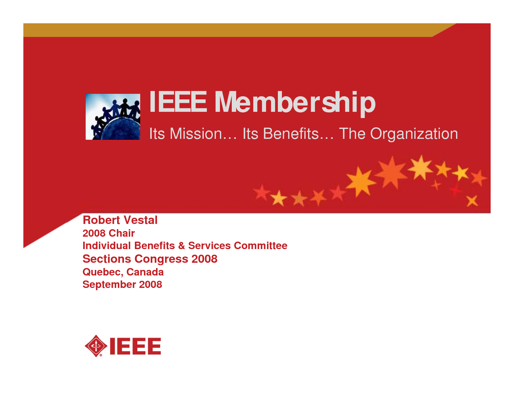
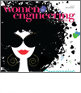
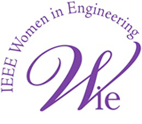

Mission Of IEEE Membership
Who We Are
The mission of IEEE WIE is to facilitate the global recruitment a
nd retention of women in technical disciplines.
IEEE WIE envisions a vibrant community of IEEE women and men collectively
using their diverse talents to innovate for the benefit of humanity.

Meet us in our interactive e-Book
Page through this robust e-Book and read all about members
of IEEE WIE by industry, profession, schooling,
their many impressive achievements, and much more.
Hang our event posters
Perfect for the classroom, these colorful, large posters
feature inspiring messages from and photos of the engineers
and technology experts who are proud members of IEEE WIE.

IEEE WIE award-winning magazine
Congratulations to all involved in the production of IEEE Women in Engineering Magazine. Your contributions helped earn the publication the 2008, 2010, 2011, and 2012 APEX Award of Excellence in the category of New Magazines and Journals.

Mission
The mission of IEEE WIE is to facilitate the global recruitment and retention of women in technical disciplines. IEEE WIE envisions a vibrant community of IEEE women and men collectively using their diverse talents to innovate for the benefit of humanity.